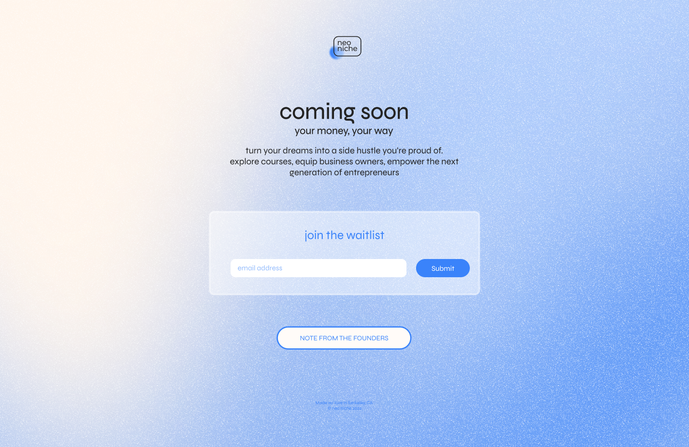
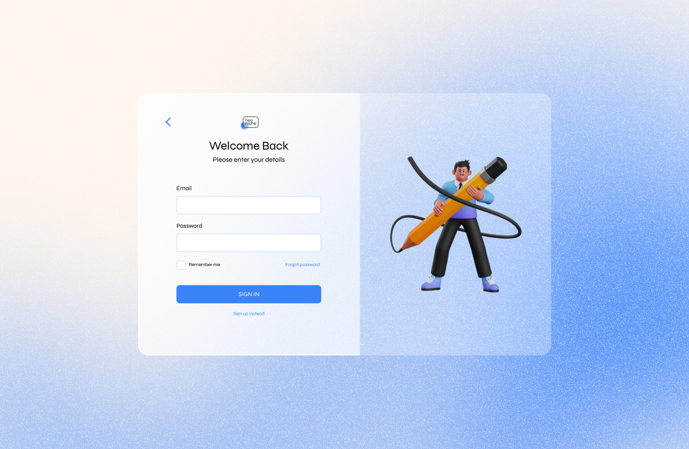
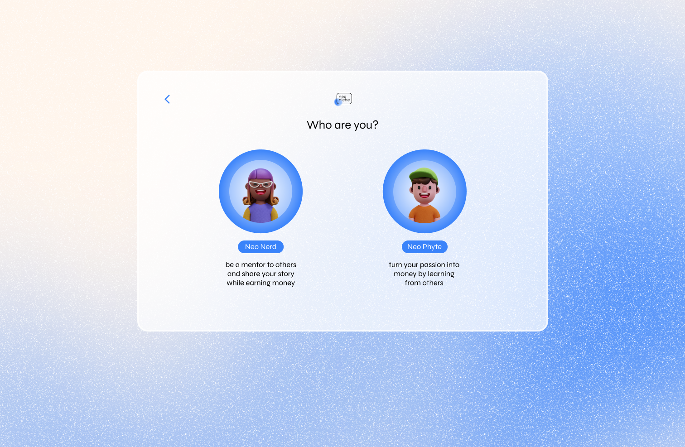
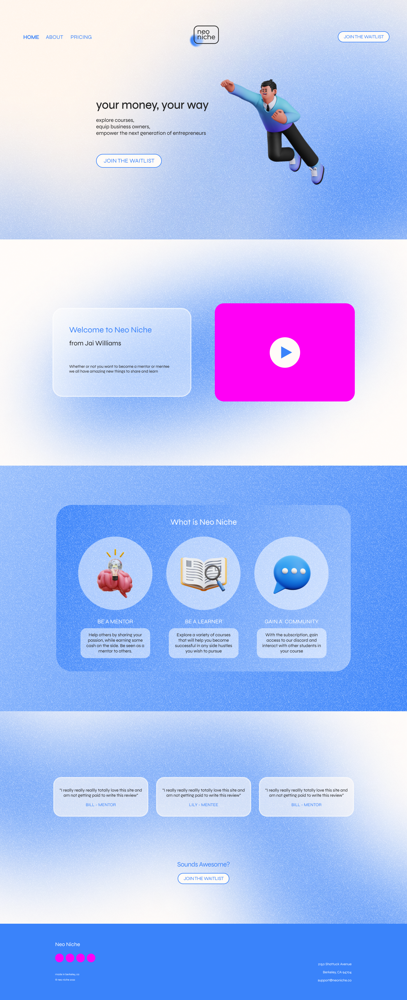
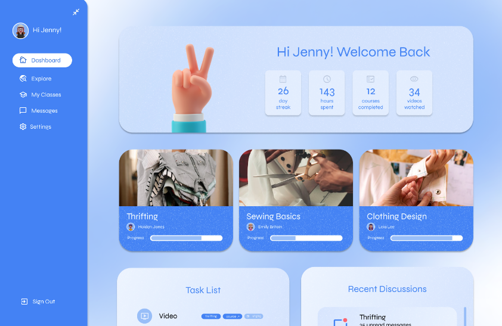

neoniche
exploration in designing with start-ups
overview
I enrolled in a bootcamp course at UC Berkeley that lasted only a week before Spring 2022. The course grouped together students from diverse backgrounds into teams of four to five. Our current CEO pitched an idea to help Gen Z learn how to become entrepreneurs by turning their passions and hobbies into a business. People could create or watch videos on how to turn certain passions, such as thrifting, into a profitable business from those their own age. I became the lead designer for our project and designed a working onboarding prototype for both learners and educators in less than one week while we built our startup and worked on pitching on the last day of our bootcamp.
We were set to launch around 2023 however due to our team being in different locations after a while working on the project, we ended up haulting the project. Due to that I would still love to share what I built with my team. All designs are completely created by me only since our team is very multidisplinary and I was the sole designer.




